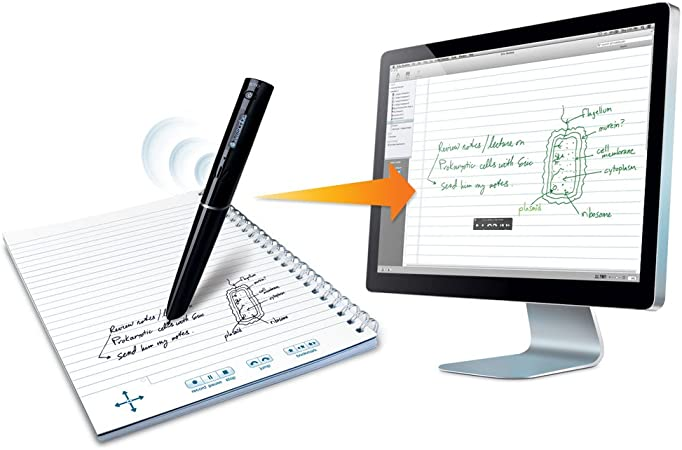
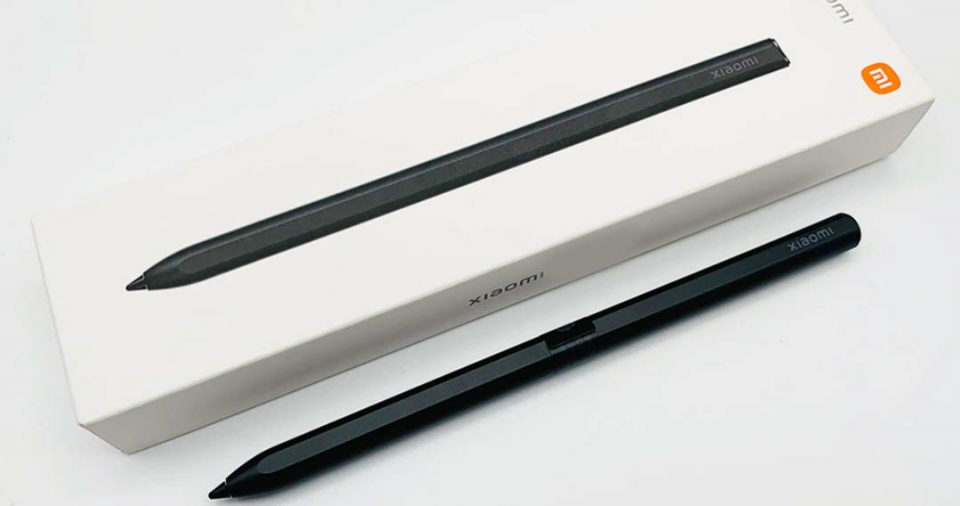
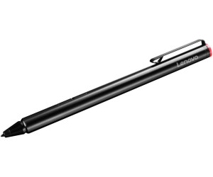
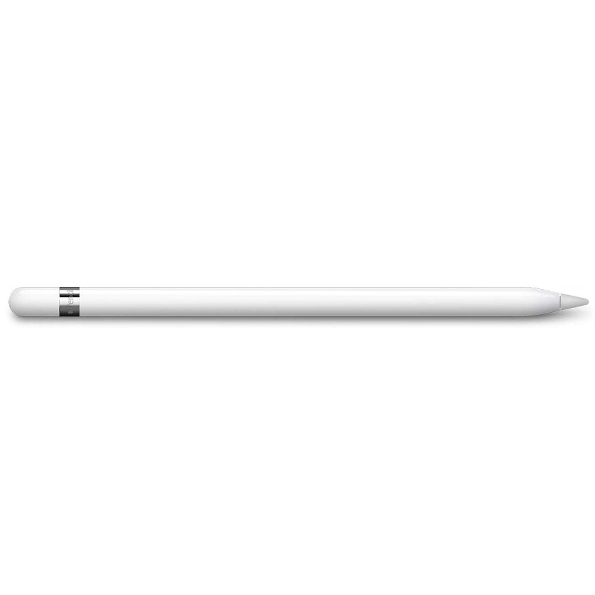
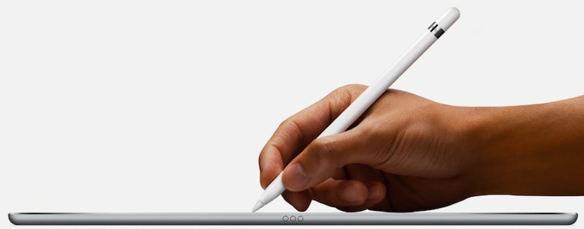

Análisis
Bolígrafo inteligente ( Smart pen) Es un instrumento de tinta que graba lo escrito por el bolígrafo y lo pasa al ordenador. son un accesorio que se utiliza para escribir en una tablet, smartphone u ordenador con pantalla táctil, de modo que se pueda ver reflejado en esa pantalla lo mismo el trazo que el gesto, pues también actúan como punteros en lugar de nuestros dedos
Smart Pen
La manera mas tecnologica de escribir.
La forma mas rápida de escribir a mano y pasarlo a limpio
Novedad del mercado.
Compruébalo.
Eficaz
La manera mas eficiente de escribir para tus dispositivos.
¿Para que sirve?
Aquí te explicamos para que sirve:
Explicación:
El bolígrafo se utiliza como un bolígrafo normal, con la diferencia de que si usamos uno de los cuadernos especiales del sistema, mediante una cámara de infrarrojos detecta la posición en cada momento de la escritura, realizando un escaner en tiempo real de todo lo escrito o dibujado
Algunas de las marcas son:
- Xiaomi Smart Pen. - Lenovo Precision Pen. - Apple Pencil.
| Marca | Creador |
|---|---|
| Xiaomi Smart Pen | Xiaomi |
| Lenovo Precision Pen | Lenovo |
| Apple Pencil | Apple |
En la tabla superior podemos obsservar difentes marcas que se encuentran en el mercado de bolígrafros inteligentes
Características
Características:
Sensor de color RGB, que escanea el color de los objetos.
➣ Pogras sincronizar con Inkspace, Evernote , OneNote, Dropbox por vía Online.
➣ Adquiere carga por puerto micro USB
➣ Memoria electrónica interna.
➣ Existen de varios tamaños (A4 y A5).
➣ Se puede conectar a través del bluetooth.
Principales Precios de bolígrafros inteligente
| Modelo | Precio | Foto |
|---|---|---|
| Xiaomi Smart Pen | 60,70 euros. |  |
| Lenovo Precision Pen | 49,00 euros |  |
| Apple Pencil | 119,00 euros. |  |
¿Cómo se usa?
Aquí explicaremos como se usa:
Como dispositivo de entrada captura la letra o trazos de un usuario, convierte la información analógica manuscrita creada utilizando "bolígrafo y papel" a datos digitales, habilitando los datos para ser utilizadas en varias aplicaciones
